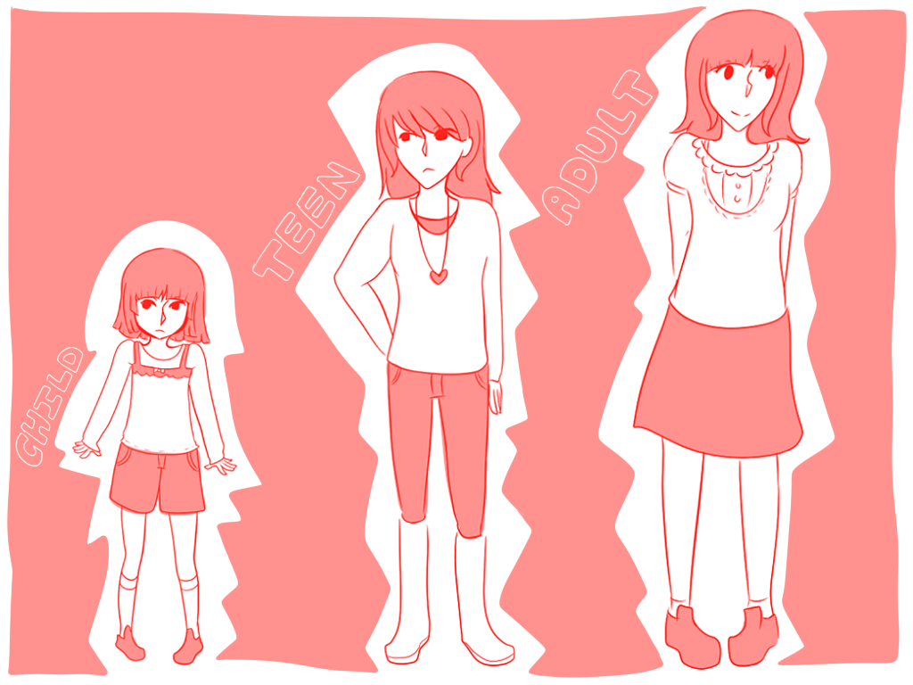
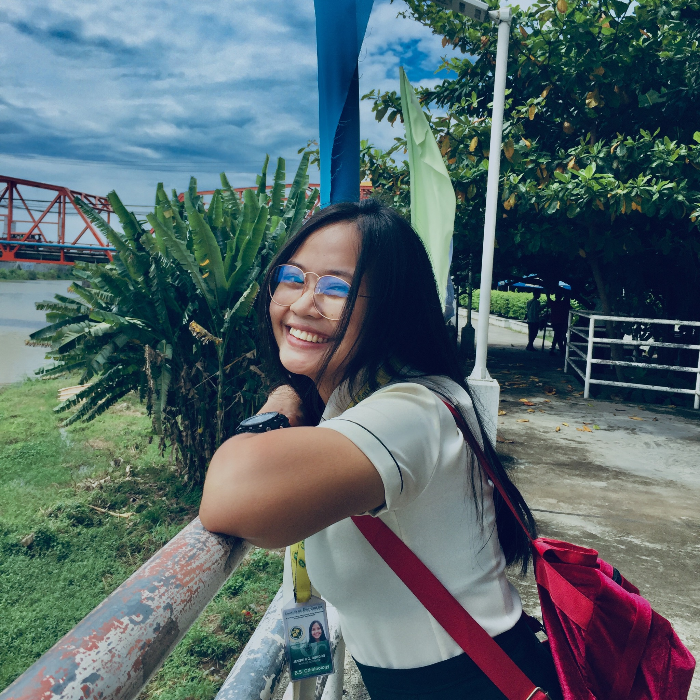

Two things about me: I'm introverted,
love my alone time per my therapist, and though I don't have foreign blood in my genes, our doctor thinks our ancestors might've had
some foreign roots that got passed down through generations.
My Life Story

When I was my younger days, I was a lively and curious child, always seeking new adventures.
I loved trying new things and playing soccer with the neighborhood boys was a daily thrill, even if it led to a swollen foot once in a while.
During my teenage years, I became quieter, finding comfort in reading non-fiction books and teaching myself various skills.
I was more focused on self-improvement than the wild escapades of my younger days.As I entered adulthood, I became more mindful and aware.
Life's lessons transformed me into a deliberate and purposeful individual. I learned to balance ambition with introspection, creating a more intentional and fulfilling life.
From a spirited child to a contemplative adult, my journey was marked by curiosity, resilience, and a commitment to personal growth. Each experience, whether joyful or challenging, shaped me into the person I am today, and my story continues to unfold with each passing moment.
Hobbies:
Playing guitar
Like sleeping a lot
Likes reading fictional and non-fictional books
Also likes reading manhwa or webtoon
Favorites:
Chocolate
Ramen Noodles
Scents of Vanilla perfume
Dandelions
Friends:
Erika Jean Lorca
One of my favorite people that I considered a best friend because
She's the only person who truly understands me as an individual.

Jessie Burgos
Idk this person.Jokes! I love this girl even though I
considered our friendship a bad maintenance friend since we're
both busy with work and studies. But when we meet up, the
connection is still the same.